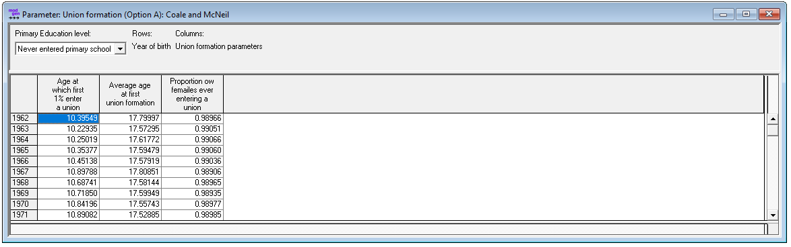
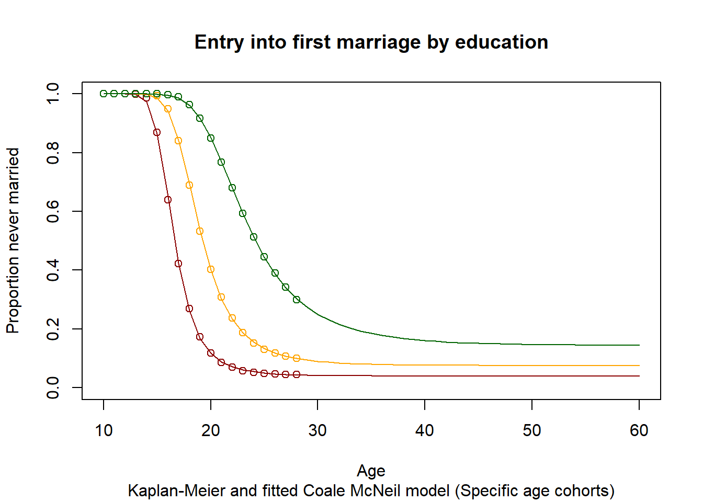
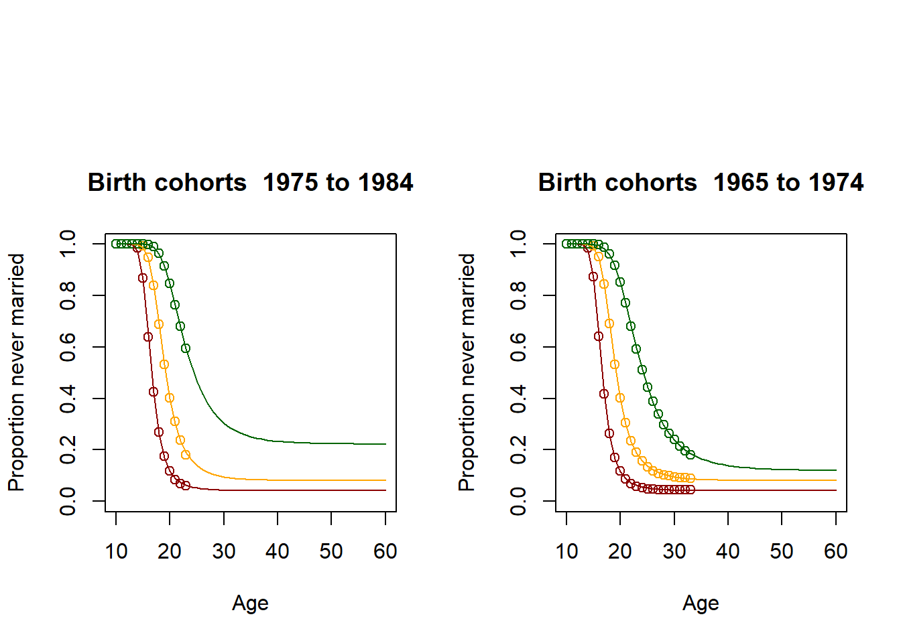
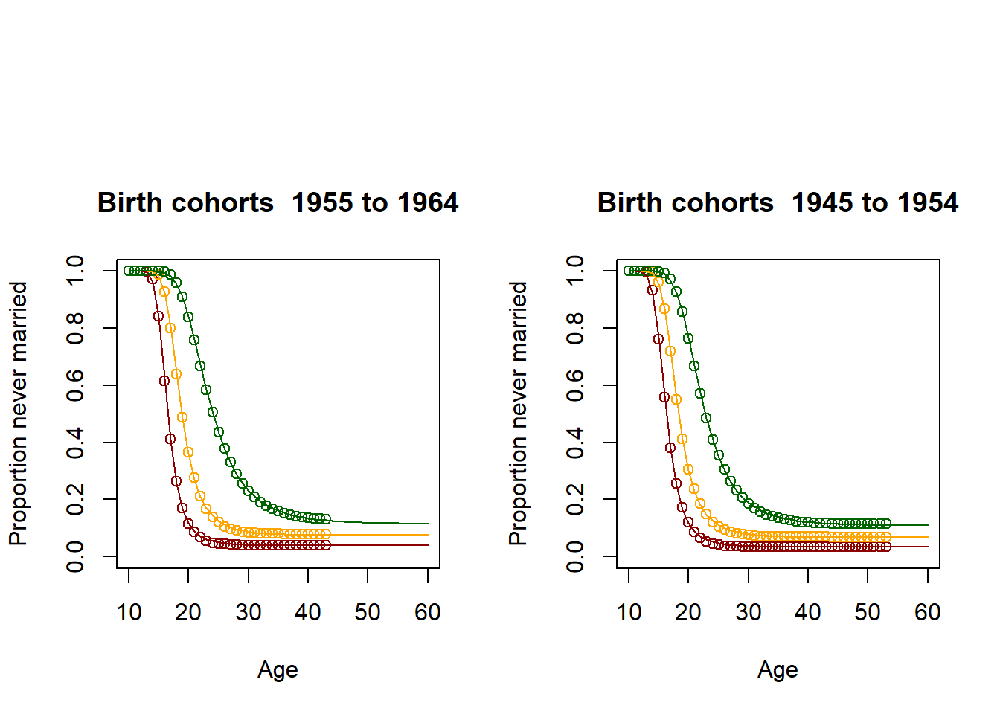
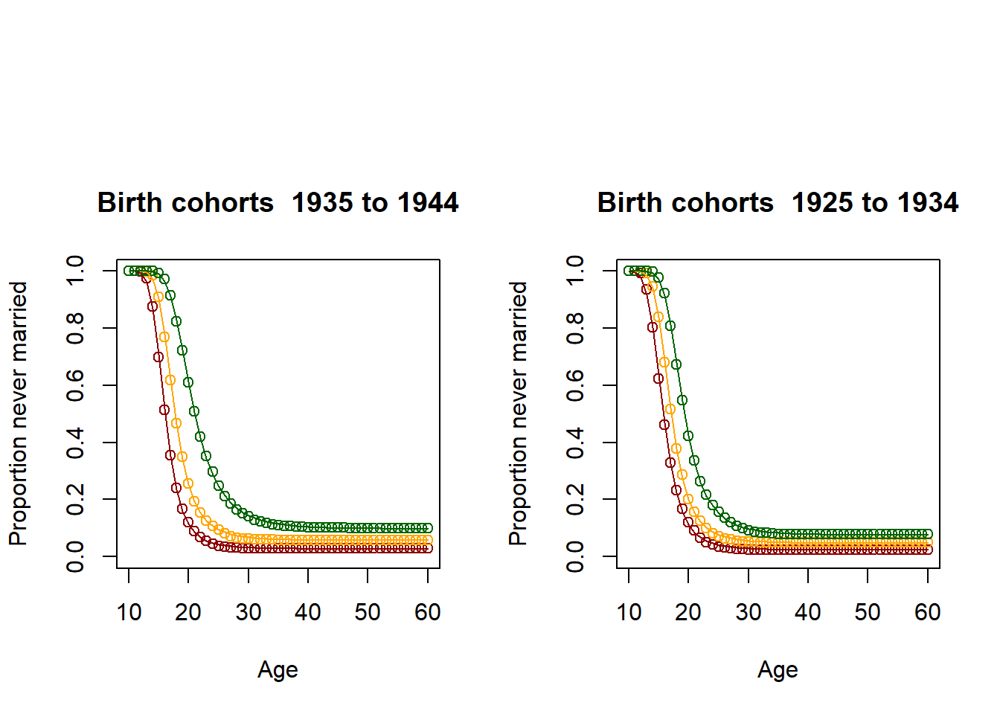
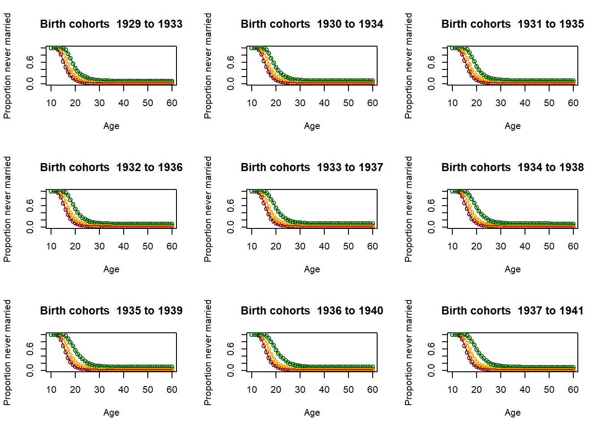
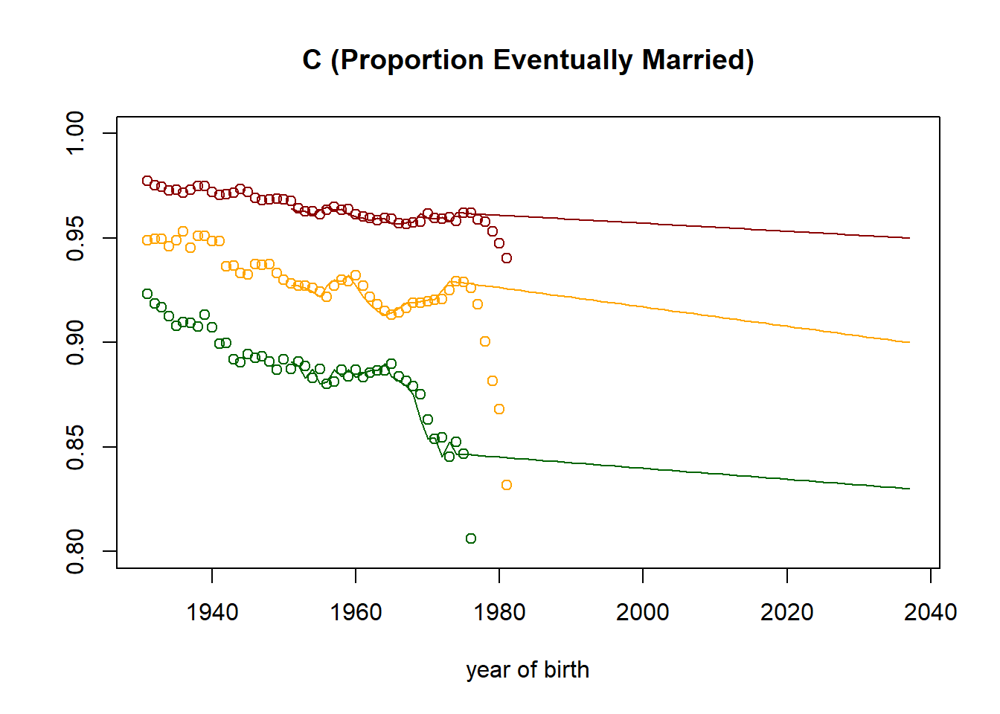
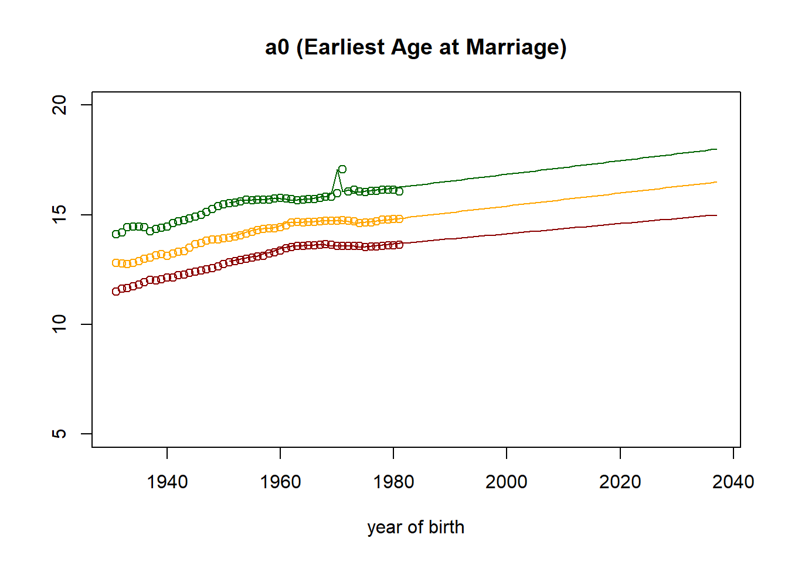
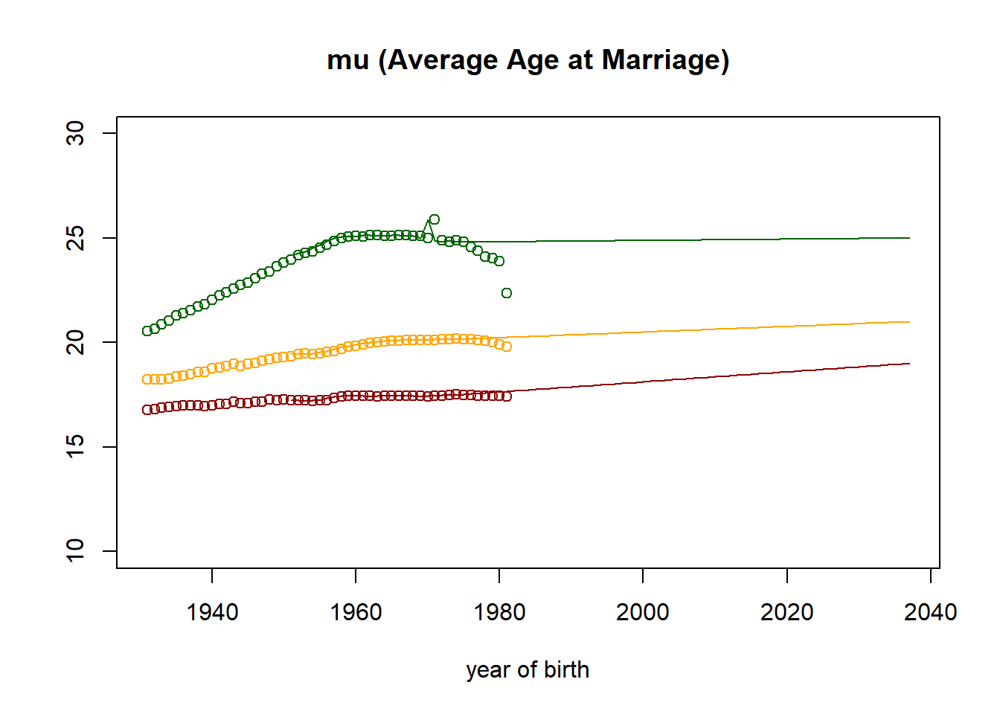

1.7. Script 7: First Marriage¶
First marriage is implemented by fitting parametric Coale & McNeil models by education group and birth cohort. The parameterization of such a model is very intuitive; parameters are the minimum age at first union formation, the average age, and the proportion of women who will eventually marry. An alternative model based on age-specific period marriage rates is also implemented and can be chosen by the user.
The code below estimates parametric Coale & McNeil models by education group and birth cohort. For the period model option, data have to be provided from other sources, or can be simulated using the cohort model (which produces period rates as part of its table output). For the alternative model version, the code below creates corresponding parameter tables containing default values. The code also produces illustrations of the fitted models.
1.7.1. File output¶
The code below generates model parameters stored in a Modgen .dat file
- Union formation (Option A) parameters of a Coale & McNeil by education and year of birth: minimum and average age of marriage, proportion eventually marrying
- Union formation (Option B) parameters: union formation hazards by education, age and period

1.7.2. Code¶
1.7.2.1. Setting up Data¶
####################################################################################################
#
# DYNAMIS-POP Parameter Generation File 7 - Chunk A - Union Formation
# This file is generic and works for all country contexts.
# Input file: globals_for_analysis.RData (To generate such a file run the setup script)
# Last Update: Martin Spielauer 2018-05-12
#
####################################################################################################
####################################################################################################
# Clear work space, load required packages and the input object file
####################################################################################################
rm(list=ls())
library(haven)
library(dplyr)
library(data.table)
library(sp)
library(maptools)
library(survival)
library(fmsb)
library(eha)
load(file="globals_for_analysis.RData")
# Constants
nCensusYear <- g_census_year
nStartYearOfBirth <- g_census_year - 70
nTimePointsLow <- g_census_year - 25
nTimePointsHigh <- g_census_year + 37
position <- 45 #position of 1975 value
# Data files
alldat <- g_residents_dat
parafile <- file(g_para_marriage, "w")
# select observations and variables
alldat <- alldat[alldat$M_MALE == 0,]
alldat <- alldat[alldat$M_AGE >= 15,]
alldat <- alldat[,c("M_AGE","M_EDUC","M_AGEMAR")]
# Observation time (m_obstime) and failure (m_event)
alldat$m_obstime <- alldat$M_AGE - 10
alldat$m_obstime[!is.na(alldat$M_AGEMAR)] <- alldat$M_AGEMAR[!is.na(alldat$M_AGEMAR)] - 10
alldat$m_obstime[alldat$m_obstime < 0] <- 0.001
alldat$m_event <- (!is.na(alldat$M_AGEMAR))
1.7.2.2. Illustration: Kaplan-Meier estimator and fitted Coale McNeil Model for a single age group (15-30)¶
####################################################################################################
#
# DYNAMIS-POP Parameter Generation File 7 - Chunk B
# Illustration of a Kaplan-Meier estimator and fitted Coale McNeil Model for a single age group
#
####################################################################################################
lowerage = 15
upperage = 30
# select data according to age limits
dat <- alldat[alldat$M_AGE >= lowerage & alldat$M_AGE <= upperage,]
# Create a survival object
survdat <- Surv(dat$m_obstime, dat$m_event)
# fit a Kaplan-Meier model by education
fit <- survfit(survdat ~ M_EDUC, data = dat)
# Copyy results into a matrix
result <- summary(fit,times=seq(from=1, to=min(upperage-9,51), by=1))
EverMarriedFemales <- 1-matrix(c(result$surv), nrow=min(51,upperage-11))
# Fit a Coale McNeill Model using the results of the Kaplan Meier estimater by education
Ages <- 10:60
res_low <- fitCM(initialpar=c(3, 11, 1), data=EverMarriedFemales[,1], ages=Ages, mode=2)
res_med <- fitCM(initialpar=c(3, 11, 1), data=EverMarriedFemales[,2], ages=Ages, mode=2)
res_high <- fitCM(initialpar=c(3, 11, 1), data=EverMarriedFemales[,3], ages=Ages, mode=2)
plot(Ages, c(1-EverMarriedFemales[,1],rep(NA,max(62-upperage,0))),col="darkred",
main = "Entry into first marriage by education",
sub = "Kaplan-Meier and fitted Coale McNeil model (Specific age cohorts)",
xlab = "Age",
ylab = "Proportion never married",
ylim=c(0,1),
xlim=c(10,60)
)
points(Ages, c(1-EverMarriedFemales[,2],rep(NA,max(62-upperage,0))), col="orange")
points(Ages, c(1-EverMarriedFemales[,3],rep(NA,max(62-upperage,0))), col="darkgreen")
fitted_low <- CM(res_low[1], res_low[2], res_low[3])
fitted_med <- CM(res_med[1], res_med[2], res_med[3])
fitted_high <- CM(res_high[1], res_high[2], res_high[3])
lines(Ages, 1-fitted_low$G[1:51], col="darkred")
lines(Ages, 1-fitted_med$G[1:51], col="orange")
lines(Ages, 1-fitted_high$G[1:51], col="darkgreen")

1.7.2.3. Illustration: Kaplan-Meier estimator and fitted Coale McNeil Model for 6 age groups¶
####################################################################################################
#
# DYNAMIS-POP Parameter Generation File 7 - Chunk C
# Illustration of a Kaplan-Meier estimator and fitted Coale McNeil Models
# Loop for producing Graphs for different birth cohorts - Graphs informing analysis
#
####################################################################################################
par(mfrow=c(1,2),oma = c(0, 0, 5, 0))
for (lowerage in c(16,26,36,46,56,66))
{
upperage = lowerage + 9
dat <- alldat[alldat$M_AGE >= lowerage & alldat$M_AGE <= upperage,]
survdat <- Surv(dat$m_obstime, dat$m_event)
fit <- survfit(survdat ~ M_EDUC, data = dat)
result <- summary(fit,times=seq(from=1, to=min(upperage-9,51), by=1))
EverMarriedFemales <- 1-matrix(c(result$surv), nrow=min(51,upperage-11))
Ages <- 10:60
res_low <- fitCM(initialpar=c(3, 11, 1), data=EverMarriedFemales[,1], ages=Ages, mode=2)
res_med <- fitCM(initialpar=c(3, 11, 1), data=EverMarriedFemales[,2], ages=Ages, mode=2)
res_high <- fitCM(initialpar=c(3, 11, 1), data=EverMarriedFemales[,3], ages=Ages, mode=2)
plot(Ages, c(1-EverMarriedFemales[,1],rep(NA,max(62-upperage,0))),col="darkred",
main = paste("Birth cohorts ",nCensusYear-upperage,"to",nCensusYear-lowerage,sep=" "),
xlab = "Age",
ylab = "Proportion never married",
ylim=c(0,1),
xlim=c(10,60)
)
points(Ages, c(1-EverMarriedFemales[,2],rep(NA,max(62-upperage,0))), col="orange")
points(Ages, c(1-EverMarriedFemales[,3],rep(NA,max(62-upperage,0))), col="darkgreen")
fitted_low <- CM(res_low[1], res_low[2], res_low[3])
fitted_med <- CM(res_med[1], res_med[2], res_med[3])
fitted_high <- CM(res_high[1], res_high[2], res_high[3])
lines(Ages, 1-fitted_low$G[1:51], col="darkred")
lines(Ages, 1-fitted_med$G[1:51], col="orange")
lines(Ages, 1-fitted_high$G[1:51], col="darkgreen")
}
  
1.7.2.4. Fitting the past¶
####################################################################################################
#
# DYNAMIS-POP Parameter Generation File 7 - Chunk D
# Loop for producing parameters as 5 year averages - This is essential for producing the parameter
#
####################################################################################################
parameter = matrix(nrow=9,ncol=51)
par(mfrow=c(3,3))
for (yob in c((nStartYearOfBirth+1):(nStartYearOfBirth+51)))
{
lowerage = nCensusYear-yob-2
upperage = lowerage + 4
dat <- alldat[alldat$M_AGE >= lowerage & alldat$M_AGE <= upperage,]
survdat <- Surv(dat$m_obstime, dat$m_event)
fit <- survfit(survdat ~ M_EDUC, data = dat)
result <- summary(fit,times=seq(from=1, to=min(upperage-9,51), by=1))
EverMarriedFemales <- 1-matrix(c(result$surv), nrow=min(51,upperage-11))
Ages <- 10:60
res_low <- fitCM(initialpar=c(3, 11, 1), data=EverMarriedFemales[,1], ages=Ages, mode=2)
res_med <- fitCM(initialpar=c(3, 11,1), data=EverMarriedFemales[,2], ages=Ages, mode=2)
res_high <- fitCM(initialpar=c(3, 11, 1), data=EverMarriedFemales[,3], ages=Ages, mode=2)
plot(Ages, c(1-EverMarriedFemales[,1],rep(NA,max(62-upperage,0))),col="darkred",
main = paste("Birth cohorts ",nCensusYear-upperage,"to",nCensusYear-lowerage,sep=" "),
xlab = "Age",
ylab = "Proportion never married",
ylim=c(0,1),
xlim=c(10,60)
)
points(Ages, c(1-EverMarriedFemales[,2],rep(NA,max(62-upperage,0))), col="orange")
points(Ages, c(1-EverMarriedFemales[,3],rep(NA,max(62-upperage,0))), col="darkgreen")
fitted_low <- CM(res_low[1], res_low[2], res_low[3])
fitted_med <- CM(res_med[1], res_med[2], res_med[3])
fitted_high <- CM(res_high[1], res_high[2], res_high[3])
lines(Ages, 1-fitted_low$G[1:51], col="darkred")
lines(Ages, 1-fitted_med$G[1:51], col="orange")
lines(Ages, 1-fitted_high$G[1:51], col="darkgreen")
parameter[1,yob-nStartYearOfBirth] <- fitted_low$G[51]
parameter[2,yob-nStartYearOfBirth] <- res_low[2]
parameter[3,yob-nStartYearOfBirth] <- fitted_low$mu/fitted_low$G[51]
parameter[4,yob-nStartYearOfBirth] <- fitted_med$G[51]
parameter[5,yob-nStartYearOfBirth] <- res_med[2]
parameter[6,yob-nStartYearOfBirth] <- fitted_med$mu/fitted_med$G[51]
parameter[7,yob-nStartYearOfBirth] <- fitted_high$G[51]
parameter[8,yob-nStartYearOfBirth] <- res_high[2]
parameter[9,yob-nStartYearOfBirth] <- fitted_high$mu/fitted_high$G[51]
}

1.7.2.5. Scenario and parameter creation¶
For projected years, values are calculated interpolating between fitted values and targets. The targets are a scenario and can be changed, the values are informed by past trends; they are set in the countrs-specific initialization file
####################################################################################################
#
# DYNAMIS-POP Parameter Generation File 7 - Chunk E
# Extend the solutions for projected years by linear interpolation to 2048 targets
# This is essential for generating parameters
# The targets represent a scenario and can be changed
#
####################################################################################################
timepoints <- nTimePointsLow:nTimePointsHigh
extension <- matrix(nrow=9,ncol=63)
extension[1,] = c((timepoints-nTimePointsLow+1) * (target_c_low - parameter[1,position])/length(extension[1,]) + parameter[1,position])
extension[4,] = c((timepoints-nTimePointsLow+1) * (target_c_med - parameter[4,position])/length(extension[1,]) + parameter[4,position])
extension[7,] = c((timepoints-nTimePointsLow+1) * (target_c_hig - parameter[7,position])/length(extension[1,]) + parameter[7,position])
extension[2,] = c((timepoints-nTimePointsLow+1) * (target_a0_low - parameter[2,position])/length(extension[1,]) + parameter[2,position])
extension[5,] = c((timepoints-nTimePointsLow+1) * (target_a0_med - parameter[5,position])/length(extension[1,]) + parameter[5,position])
extension[8,] = c((timepoints-nTimePointsLow+1) * (target_a0_hig - parameter[8,position])/length(extension[1,]) + parameter[8,position])
extension[3,] = c((timepoints-nTimePointsLow+1) * (target_av_low - parameter[3,position])/length(extension[1,]) + parameter[3,position])
extension[6,] = c((timepoints-nTimePointsLow+1) * (target_av_med - parameter[6,position])/length(extension[1,]) + parameter[6,position])
extension[9,] = c((timepoints-nTimePointsLow+1) * (target_av_hig - parameter[9,position])/length(extension[1,]) + parameter[9,position])
fullmatrix <- matrix(nrow=9, ncol=87)
fullmatrix[,1:24] <- parameter[,22:45]
fullmatrix[,25:87] <- extension[,]
####################################################################################################
# Graph the results (fitted points and parameters) Graphs both the fitted values and the parameter
# which combines fitted values for the past and projected data
####################################################################################################
observed <- cbind(parameter,matrix(nrow=9,ncol=56,NA))
parameters <- cbind(matrix(nrow=9,ncol=20,NA),fullmatrix)
plot((nStartYearOfBirth+1):nTimePointsHigh,observed[1,] ,col="darkred",
main = paste("C (Proportion Eventually Married)"),
xlab = "year of birth",
ylab = "",
ylim=c(0.8,1)
)
points((nStartYearOfBirth+1):nTimePointsHigh,observed[4,], col="orange")
points((nStartYearOfBirth+1):nTimePointsHigh,observed[7,], col="darkgreen")
lines((nStartYearOfBirth+1):nTimePointsHigh,parameters[1,] ,col="darkred")
lines((nStartYearOfBirth+1):nTimePointsHigh,parameters[4,], col="orange")
lines((nStartYearOfBirth+1):nTimePointsHigh,parameters[7,], col="darkgreen")
plot((nStartYearOfBirth+1):nTimePointsHigh,observed[2,] ,col="darkred",
main = paste("a0 (Earliest Age at Marriage)"),
xlab = "year of birth",
ylab = "",
ylim=c(5,20)
)
points((nStartYearOfBirth+1):nTimePointsHigh,observed[5,], col="orange")
points((nStartYearOfBirth+1):nTimePointsHigh,observed[8,], col="darkgreen")
lines((nStartYearOfBirth+1):nTimePointsHigh,parameters[2,] ,col="darkred")
lines((nStartYearOfBirth+1):nTimePointsHigh,parameters[5,], col="orange")
lines((nStartYearOfBirth+1):nTimePointsHigh,parameters[8,], col="darkgreen")
plot((nStartYearOfBirth+1):nTimePointsHigh,observed[3,] ,col="darkred",
main = paste("mu (Average Age at Marriage)"),
xlab = "year of birth",
ylab = "",
ylim=c(10,30)
)
points((nStartYearOfBirth+1):nTimePointsHigh,observed[6,], col="orange")
points((nStartYearOfBirth+1):nTimePointsHigh,observed[9,], col="darkgreen")
lines((nStartYearOfBirth+1):nTimePointsHigh,parameters[3,] ,col="darkred")
lines((nStartYearOfBirth+1):nTimePointsHigh,parameters[6,], col="orange")
lines((nStartYearOfBirth+1):nTimePointsHigh,parameters[9,], col="darkgreen")
####################################################################################################
# Produce the parameter table UnionParameters[PRIMARY_LEVEL][YOB_UNION][UNION_PARA]
####################################################################################################
para_C <- c(fullmatrix[1,],fullmatrix[4,],fullmatrix[7,])
para_a0 <- c(fullmatrix[2,],fullmatrix[5,],fullmatrix[8,])
para_av <- c(fullmatrix[3,],fullmatrix[6,],fullmatrix[9,])
union_para <- rbind(para_a0,para_av,para_C)
####################################################################################################
# Write the parameter table UnionParameters[PRIMARY_LEVEL][YOB_UNION][UNION_PARA]
####################################################################################################
cat("parameters { \n //EN Union Formation\ndouble UnionParameters[PRIMARY_LEVEL][YOB_UNION][UNION_PARA]= {\n",
file=parafile)
cat(format(round(union_para[,],5)), file=parafile, sep=", ", append=TRUE)
cat("\n };\n", file=parafile, append=TRUE)
####################################################################################################
# Write the parameter (with mockup values) for the alternative model
####################################################################################################
cat("//EN Union formation (Option B): Hazards\n", file=parafile, append=TRUE)
cat("double UnionFormationHazardParameter[PRIMARY_LEVEL][AGE_UNION][SIM_YEAR_RANGE] = { (505) 0.02, (4646) 0.08,(505) 0.015, (4646) 0.07,(505) 0.005, (4646) 0.06, };\n", file=parafile, append=TRUE)
cat("\n};\n", file=parafile, append=TRUE)
close(parafile)
  